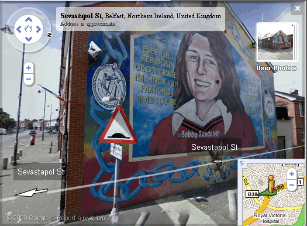
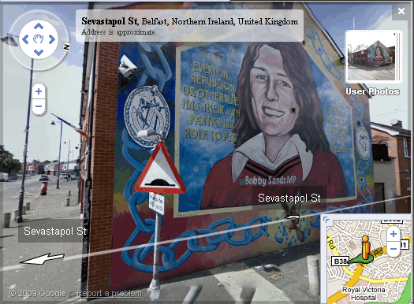
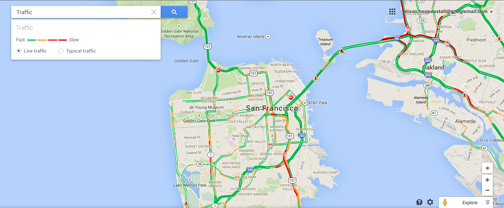
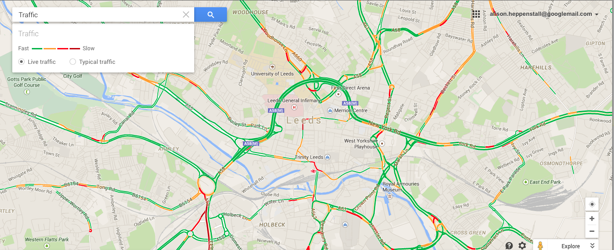
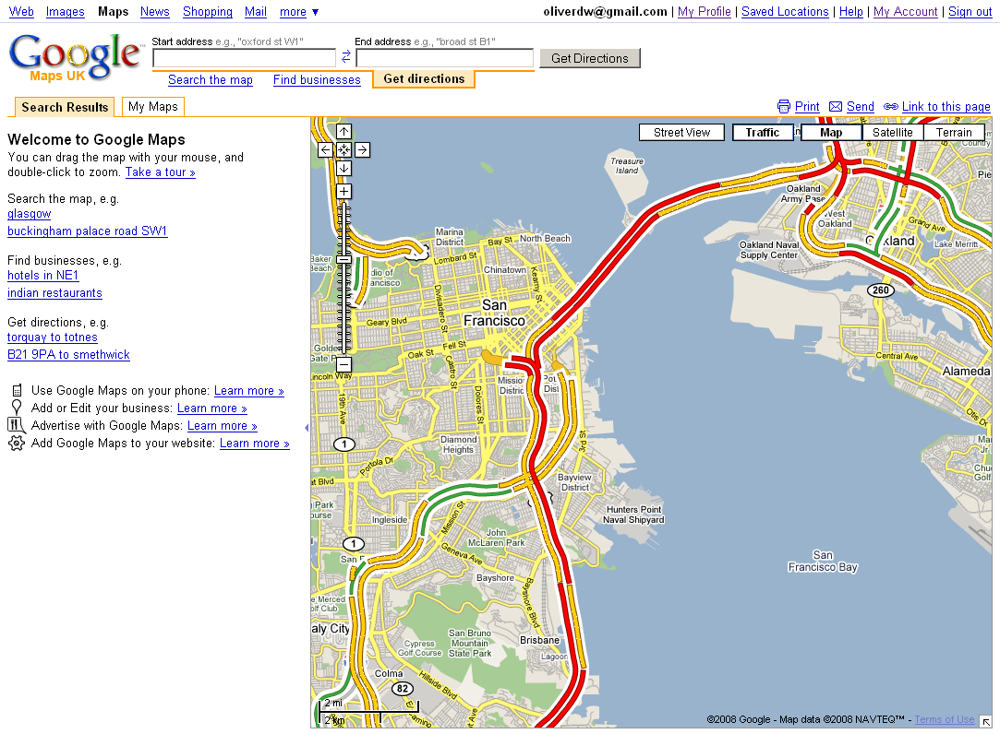

The 'street' view is a set of panoramic photographs taken at
various locations. The viewer can explore these interactively
with pan and zoom facilities, and also the ability to move to another
camera location. The images were mostly captured from cars
specially adapted for the purpose with panoramic cameras mounted on a
pole on the roof of the vehicle. The Street View photos can be
accessed where available either a dragging a person icon on the visible
map, or by zooming in beyond the usual maximum. When it
was
introduced, Street view was available only in limited
locations
in the US; the availability of data has subsequently increased to
include many US cities, and a growing number of cities in Japan,
Australasia and Europe.
The following figure shows a street view image from New York City; the Flatiron Building can be seen in the image. This image also illustrates a feature of the default Map view that is present in maps of New York: isometric outlines of buildings are included as a topographic feature. Playing around with this view, the image can be tilted to get a 3D view and transit routes, such as bike routes, displayed.
The next figure shows the extent of Street view imagery available in Paris as of October 2014.
In addition to those images that were captured by road-going cars, some notable sites have also been captured using tricycle mounted cameras, which are able to move along public footpaths etc.

The Street View images have been the subject of controversy since they were introduced, with critics arguing that they represent an invasion of privacy, and also that they could be used for reconnaissance purposes by criminals.
Street View imagery of the UK was introduced in March 2009. It is therefore worth spending some time considering the scope of Street View in the UK. The following figure shows a typical Street View image, taken outside Leeds University. Coverage extends to all public streets in the area. The School of Geography can only be seen at a distance, as it is located on a road privately owned by the university. The image shown here - of the main entrance to the University - was taken in the middle of the day; images in busier locations including tourist oriented ones often seem to have been taken very early in the morning to avoid crowding.

The initial release of Street View in the UK covered 25 areas, although it has since been considerably expanded. These were mostly the largest urban areas, but there were some exceptions. The most heavily populated locations not featured in the original data release include Brighton, Portsmouth, Bournemouth and Reading. Within each city that was featured, the extent of coverage varies. The areas covered were home to perhaps 25% of the population of the UK, although given the urban focus, the areas are not necessarily representative of all types of area within the UK.
The introduction of Street View imagery in the UK was greeted with a
mixed response. The launch merited widespread coverage in
newspapers and other media, with a number of critics complaining that
the images respresented an invasion of privacy. The campaign
group Privacy
International formally raised complaints with the Office of the
Information Commissioner, citing a number of instances of possible
invasion of privacy, including these cases:
Google contended that a number of steps had been taken to avoid invasion of privacy, and that these steps had been discussed with the Information Commissioner prior to launching the service.
The primary method used is the application of an algorithm that blurs faces. It is notable that the algorithm is applied automatically, and thus also blurs images of faces, for example in advertising hoardings. However, this algorithm is not 100% consistent.
The last two figures here show two different views of a republican mural in Belfast as seen in Google Street View. The first image was captured from the Falls Road; the face depicted in the mural (that of the MP Bobby Sands, who died following a hunger strike in 1981) has been blurred. The second image was captured at closer range, and has not been blurred, presumably because the image is too large to be recognised as a face.
 

A final mode, available only in selected locations is the 'traffic mode', in which roads are highlighted according to the current degree of congestion. As with the Terrain view, this was offered as a distinct view when launched, but has now been relegated to layer status. The figure below shows traffic congestion in part of San Francisco. The traffic congestion information is gathered in near real-time. As with other mapping features, the traffic mode was introduced for a limited number of American cities before being rolled out to other locations. The extent to which traffic information is available depends on locally available data, and thus the types of roads which are monitored vary.

A
relatively
recent adaptation of 'traffic mode' is the ability to select either
live information, or the mean previously recorded information.
The following figures show the traffic congestion information displayed
for
Leeds both (a) live (a Tuesday early afternoon)
and (b) the average conditions for a Friday evening.


Like
all maps, the correctness of the data that is made available is of
great importance. In the next section, we will consider
issues
relating to the correctness of map data.